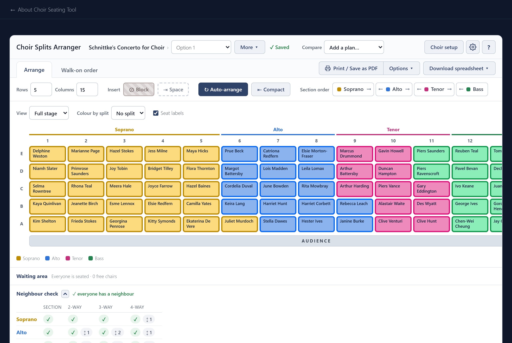

Getting started
Choir Seating Tool arranges a choir on stage so that every singer sits next to someone singing the same part, in every piece of the concert at once. You set up your choir, it works out a seating, and you adjust it by hand.

It runs in your browser, or as an app on a Windows computer. There is no account and nothing is sent anywhere: your choir is saved on your own device. Settings and backup explains where, how to move it to another device, and how to get the app.
A first plan in four steps
- Set up the choir. Add your singers, make a concert and say how the sections split. See Choir setup.
- Arrange. Set the size of the stage and press Auto-arrange. See Arranging.
- Adjust by hand. Drag singers to swap them, and lock the ones who must stay put. See Moving singers.
- Print and export. Print the plan or save it as a PDF, or export it as a spreadsheet. See Printing and export.
Under the stage, the Neighbour check tells you whether anyone has been left without a neighbour, and shows you who.